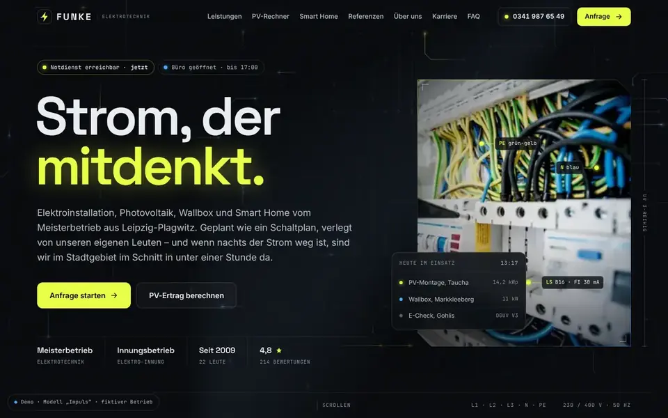
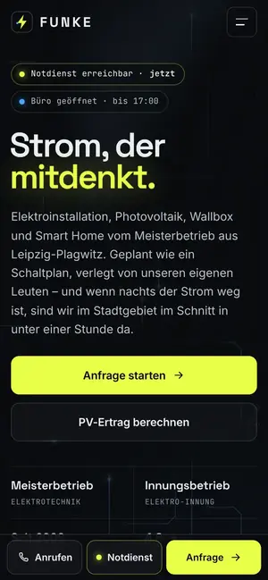

Case Study 11 / 30 · Handwerk & Bau
Funke Elektrotechnik
Modell „Impuls“
Dunkle Elektriker-Demo mit PV-Rechner, Lichtschalter-Effekt und bedienbarem Smart-Home-Panel.


Ausgangslage
Funke Elektrotechnik ist ein erfundener Elektro-Meisterbetrieb in Leipzig mit Photovoltaik, Wallbox, Smart Home und Notdienst. Besucher wollen schnell wissen, ob sich eine PV-Anlage für ihr Dach lohnt, was eine Sanierung umfasst und wen sie im Störungsfall anrufen. Die Seite soll das Technische greifbar machen, ohne wie ein Datenblatt zu wirken.
Idee
Das Modell „Impuls“ ist dunkel und präzise: Raster- und Messlinien, Monospace-Labels, Glas-Panels und ein sparsam gesetztes Spannungsgelb mit Blau als Zweitakzent. Space Grotesk für Überschriften, Inter für Text und JetBrains Mono für Werte ergeben die Anmutung eines Schaltplans. Im Hero laufen Lichtimpulse über generative Leiterbahnen, der Mauszeiger zieht einen Lichtkegel nach – Strom als sichtbares Motiv.
Was die Seite kann
- PV-RechnerDachfläche, Ausrichtung, Verbrauch, Speicher und Strompreis ergeben Ertrag und Ersparnis mit rollenden Ziffern, einem SVG-Monatsdiagramm und einsehbaren Annahmen; das Ergebnis lässt sich in die Anfrage übernehmen.
- LichtschalterEin großer Schalter mit aria-pressed schaltet den Raum per kreisförmigem clip-path vom Schalter aus ein.
- Smart-Home-PanelLicht mit Dimmer, Rollläden, Heizung und Wallbox mit Ladering sowie drei Szenen, komplett per Tastatur bedienbar und für Screenreader angesagt.
- Leistungen als SchaltplanNeun „Stromkreise“ im Raster mit Spotlight-Rand, dessen Linien-Icons sich beim Einblenden zeichnen.
- Referenzen-FilterProjekte nach Photovoltaik, Smart Home, Sanierung und Gewerbe filtern, mit FLIP-Animation über die Web Animations API.
- Status und NotdienstPillen zeigen den Bürostatus nach Uhrzeit (Europe/Berlin), Notdienst-Band und eine feste Aktionsleiste auf dem Handy führen zu Anruf, Notdienst und Anfrage.
Dein Betrieb
So eine Seite für dich?
Schreib mir kurz, was du anbietest und was deine Website leisten soll. Du bekommst eine ehrliche Einschätzung, was sie kostet und was sie dir bringen kann.
Projekt anfragen